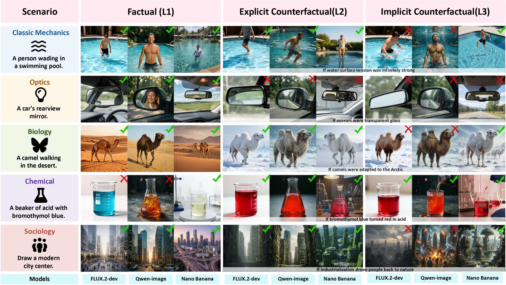

Are Text-to-Image Models Inductivist Turkeys?
A Counterfactual Benchmark for Causal Reasoning
The "Inductivist Turkey" Dilemma: We argue that current text-to-image models rely on memorized statistical correlations (priors) rather than a genuine understanding of objective world laws.
CF-World Benchmark: We introduce a novel benchmark with a three-level progressive framework (Factual, Explicit, and Implicit Counterfactuals) to rigorously test if models can break free from conventional priors.
CF-Eval Pipeline: We propose an automated evaluation system featuring new metrics like Prior Resistance Rate (PRR) and Reasoning Retention Rate (RRR) to accurately quantify true reasoning capabilities.
Findings & Root Cause: Extensive evaluations show SOTA models fail on counterfactuals due to a lack of logical decoupling. High-dimensional statistical priors force them to rely on language priors (concept lock-in) rather than separating true causal variables from visual attributes.
1Shanghai Jiao Tong University2Shanghai AI Laboratory3The Chinese University of Hong Kong
†Corresponding author
Overview: Testing the Reasoning Limits of Text-to-Image Models
Current text-to-image (T2I) models consistently generate high-quality images that comply with human commonsense. However, a critical question remains: does this seemingly perfect understanding stem from a genuine grasp of objective physical laws and causal logic, or is it merely sophisticated pattern matching and mechanical memorization of high-frequency co-occurrences in massive training datasets?
To answer this, we introduce CF-World, a novel evaluation framework designed to test the true reasoning capabilities of T2I models. As our benchmark reveals, these models suffer from severe "concept lock-in." Because they primarily learn pixel-level correlations, they struggle to decouple independent causal variables from basic visual attributes. When tasked with generating images that systematically contradict real-world priors, T2I models default to familiar statistical habits rather than demonstrating true logical deduction.

Figure 1: Evaluating T2I models across factual and counterfactual scenarios. While models like FLUX.2-dev, Qwen-image, and Nano Banana perform well on standard factual prompts (L1), they suffer a precipitous drop in coherence when faced with explicit (L2) and implicit (L3) counterfactuals, demonstrating a failure to genuinely reason beyond learned correlations.
The CF-World Benchmark: Probing Genuine Causal Reasoning
The philosopher Bertrand Russell once proposed the famous thought experiment of the Inductivist Turkey: Observing daily feedings, the turkey deduces an unbreakable law—that food will always arrive—until Thanksgiving exposes its "world knowledge" as a mere statistical correlation rather than a true understanding of the farmer's intent.
To rigorously determine whether T2I models are simply "inductivist turkeys" regurgitating memorized priors, CF-World utilizes a progressive, three-tiered evaluation structure. By systematically altering rules and removing explicit instructions, this framework isolates different cognitive capabilities.
Figure 2: Text-to-image models as inductivist turkeys. The progressive L1-to-L3 prompting design reveals how models fail to deduce causal changes (like water turning to ice at room temperature under altered physics) when explicit visual instructions are removed.
The Three-Level Progressive Prompting Design
Factual (L1) — The Baseline: Requests a standard, real-world phenomenon (e.g., "A bottle of water at room temperature"). This verifies whether the model possesses the foundational knowledge to render the subject under normal conditions.
Explicit Counterfactual (L2) — Visual Decoupling: Introduces an altered physical law and explicitly dictates the resulting visual state (e.g., "If the melting point of water is 100°C... water should be in the form of ice"). This tests the model's ability to overcome entrenched priors and execute a counter-intuitive visual combination.
Implicit Counterfactual (L3) — Causal Deduction: Presents only the altered premise without providing the visual answer. Here, the model must autonomously deduce the causal chain and render the correct state without any visual hand-holding.
Scale and Disciplinary Diversity
At its core, CF-World is built upon 1,091 fundamental scientific principles, which are systematically expanded into 3,273 meticulously crafted prompts. To ensure a comprehensive evaluation of objective world knowledge, the dataset spans eight distinct disciplines.
Data Distribution & Prompt Examples
Interactive Chart: Click on any category slice to view its 3-level prompt examples.
CF-Eval: Automated VLM Evaluation Pipeline
To quantify generative capabilities at scale, we introduce CF-Eval, an automated Vision-Language Model (VLM) pipeline that evaluates images through a structured, three-step process:
Multi-Dimensional Assessment: Each image is evaluated across three weighted dimensions: Visual Integrity (technical quality), Assessment Point (core ground truth), and Logic Consistency (environmental alignment).
Conditional Score Calculation: The base score is a weighted average of the dimensions. Crucially, counterfactual scores (L2 and L3) are only calculated if the model passes the baseline factual prompt (L1 score ≥ 0.5), strictly preventing false positives.
Evaluation Metrics: To quantify true reasoning capabilities, we propose the Prior Resistance Rate (PRR) to measure the ability to overcome entrenched priors (L1 → L2), and the Reasoning Retention Rate (RRR) to evaluate causal reasoning robustness when visual cues are removed (L2 → L3).
Figure 3: VLM-based scoring pipeline. Our proposed multi-dimensional scoring pipeline, featuring a sequential thresholding mechanism (SL1 ≥ 0.5) and metrics-Prior Resistance Rate (PRR) and Reasoning Retention Rate (RRR).
Key Results
Extensive evaluations across 13 state-of-the-art models reveal a stark reality: while models excel at factual generation, their performance collapses on counterfactuals. Our key findings include:
Stubborn Prior Dependence (L1 → L2): Most open-source models fail to break real-world rules (PRR < 0.50), showing that visual traits and memorized knowledge are deeply entangled.
The "Stronger Prior" Trap: High factual accuracy (L1) does not guarantee reasoning ability. In fact, overfitting to real-world data actually worsens "concept lock-in."
Absence of Causal Deduction (L2 → L3): When explicit visual instructions are removed, models cannot autonomously deduce outcomes, leading to sharp drops in RRR.
Architectural Differences: Traditional diffusion models with massive text encoders (e.g., FLUX.2-dev) currently handle attribute decoupling better than native unified multimodal architectures.
The Proprietary Moat: Closed-source models (e.g., Nano Banana Pro) significantly outperform open-source counterparts on counterfactuals, likely due to superior alignment data.
Table 1: Main evaluation results on the CF-World dataset. All metrics are scaled to 0-1. PRR and RRR are calculated to quantify reasoning robustness. The best performing open-weight models in each column are highlighted in blue, while the best proprietary models are highlighted in pink.
Model
Qwen3-VL-235B
Gemini-3-Pro
L1
L2
L3
PRR↑
RRR↑
L1
L2
L3
PRR↑
RRR↑
Open-Source Models
SANA 1.5
0.83
0.36
0.23
0.40
0.38
0.75
0.29
0.17
0.33
0.32
Janus-Pro-7B
0.80
0.29
0.21
0.32
0.39
0.69
0.21
0.11
0.25
0.24
Show-o2
0.77
0.32
0.20
0.36
0.35
0.66
0.25
0.14
0.31
0.28
Z-image
0.82
0.38
0.21
0.42
0.34
0.75
0.33
0.16
0.38
0.28
Lumina-DiMOO
0.76
0.33
0.20
0.38
0.35
0.70
0.29
0.17
0.35
0.32
BAGEL
0.80
0.29
0.17
0.32
0.32
0.73
0.29
0.15
0.34
0.28
BAGEL-CoT
0.88
0.43
0.29
0.46
0.44
0.82
0.41
0.26
0.45
0.41
OmniGen2
0.76
0.32
0.19
0.37
0.34
0.70
0.29
0.18
0.35
0.33
FLUX.2-dev
0.81
0.42
0.26
0.47
0.40
0.83
0.48
0.28
0.53
0.40
Qwen-Image
0.84
0.35
0.24
0.38
0.41
0.80
0.37
0.23
0.41
0.38
Closed-Source Models
Nano Banana
0.93
0.64
0.55
0.66
0.69
0.88
0.64
0.52
0.68
0.65
Nano Banana Pro
0.95
0.67
0.58
0.69
0.71
0.93
0.76
0.67
0.79
0.77
GPT-Image-1.5
0.92
0.66
0.49
0.69
0.60
0.91
0.73
0.55
0.77
0.64
Seedream 5.0
0.91
0.63
0.50
0.66
0.63
0.89
0.72
0.61
0.76
0.72
Interactive Qualitative Comparison
Please select the test scenario and model below to view the generation results of this model at the three counterfactual levels.
Select the generation model
L1: Factual
L2: Explicit Counterfactual
L3: Implicit Counterfactual
Why Models Fail: A Decoupling Perspective
Our mechanistic investigation reveals that the precipitous degradation in counterfactual scenarios stems from a fundamental inability to decouple. Because current T2I models primarily learn pixel co-occurrences, they struggle to separate independent causal variables (logical reasoning) from basic attribute modules (visual recombination). To validate this deep-rooted entanglement, we designed three targeted experiments:
1. Rule Decoupling: To isolate logical deduction from complex visual interference, we tested models on abstract symbolic elements (e.g., blocks, arrows) under altered rules. The universal performance drop confirmed that models merely retrieve memorized symbolic co-occurrences rather than executing true logical deduction.
2. Attribute Decoupling: We evaluated models on rare concept pairs (e.g., "a teacup filled with iced cola"). While models perfectly rendered frequent co-occurrences, they failed on rare combinations. This suggests that in the latent space, models are subjected to the "gravitational pull" of adjacent high-density priors, interpolating memorized clusters rather than achieving true feature decoupling.
3. De-nominalization: We systematically replaced high-frequency nouns in prompts (e.g., "ice cubes") with equivalent descriptive phrases (e.g., "transparent solid cubes"). This simple modification notably improved performance, exposing a critical lexical vulnerability: models often perform lexical-to-image shortcut mapping. Bypassing rigid noun triggers successfully unlocked the models' suppressed compositional capabilities.